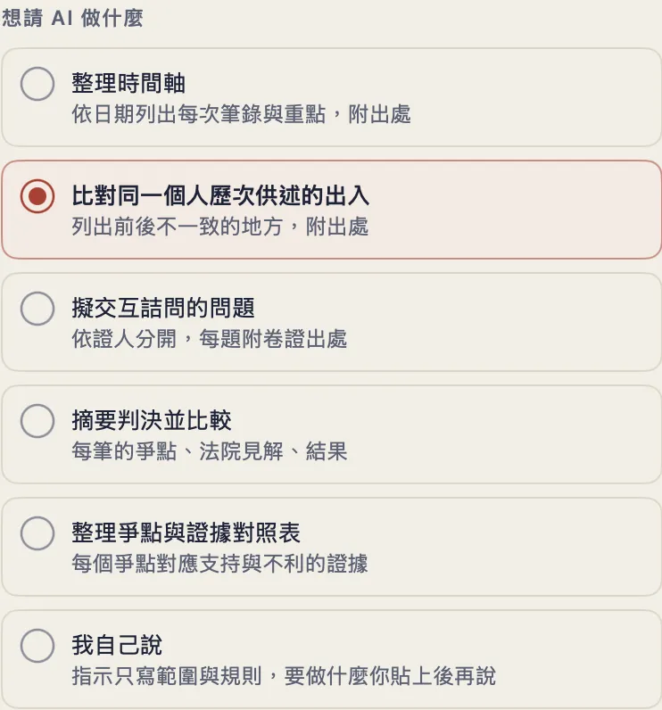
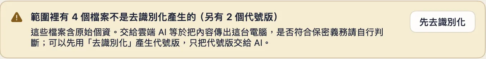
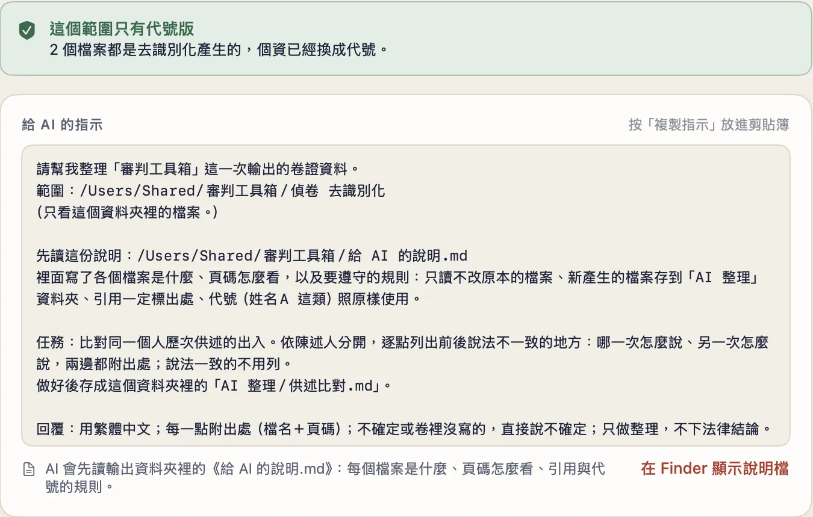
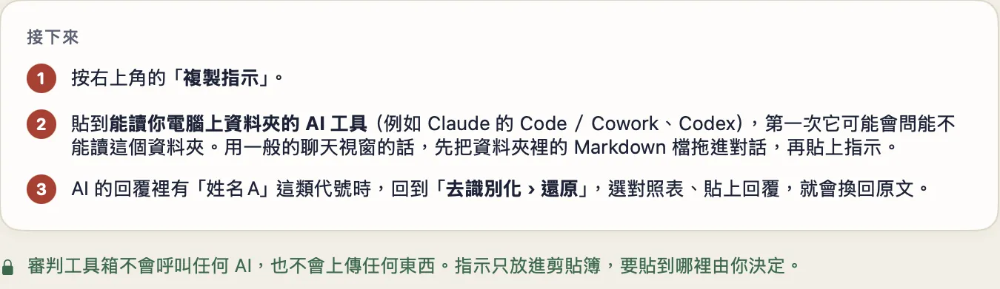
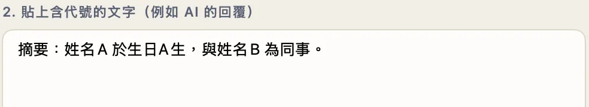

卷證要交給 AI 整理之前：先去識別化、再交出去、最後還原
AI 工具很適合做卷證的整理工作：依日期排出每一次筆錄、找出同一個人前後說法的出入、依證人列出可以問的問題。麻煩的是，卷證裡滿是當事人的姓名、身分證字號、地址，交給雲端的 AI 等於把這些內容傳出自己的電腦。這篇整理一個比較穩妥的做法：交出去之前先換成代號，回來之後再換回原文，中間每一步都留給人確認。
這篇由審判工具箱的開發者撰寫。「交給 AI」是 Mac 版的功能；示範卷是合成卷，人名都是虛構的。我們沒有替任何 AI 工具的整理品質背書，AI 的結果請一定對照原卷。
交出去之前，先想清楚一件事
把卷證貼進雲端的 AI 工具，內容就離開了你的電腦，存到那個服務的伺服器上。能不能這樣做，取決於你和當事人之間的約定、事務所的規定，以及律師的保密義務。這件事沒有工具能替你決定，請先自己判斷。
如果決定要用，比較穩妥的做法是只交出換成代號的版本。下面三個步驟都在審判工具箱裡做；第二步「交給 AI」只有 Mac 版有。
第一步：去識別化，把個資換成代號
用「去識別化」放入要交出去的卷證。App 會找出姓名、身分證字號、居留證號、電話、電子郵件、地址、出生年月日、銀行帳戶和車牌，列成清單讓你逐項確認。

- 替換方式選「代號」：同一個人全卷都是同一個代號（姓名A、姓名B），AI 讀起來還分得出誰是誰，之後也能換回原文。
- 「留姓」（王○○）和「遮蔽」（███）也可以選，但這兩種之後不能還原。
- 要還原的話，輸出時另外存一份對照表（JSON）。對照表記著每個代號原本是誰，本身就含個資，請存在跟輸出不同、只有自己看得到的地方，不要跟著交出去。

要特別注意：輸出的是換成代號的文字檔（Markdown 或純文字），不是塗黑的 PDF。而且 App 找個資用的是規則和卷證的版式（例如「被告」「受詢問人」後面的名字），不是 AI 模型，一定會有漏：沒有稱謂的人名、文字辨識讀錯的字、只寫到區的地址、圖片裡的個資都抓不到。輸出前請逐項確認，輸出後也請再看一次文字檔。
第二步：交給你用的 AI 工具
在 Mac 版打開「交給 AI」（首頁四組工具下面那張卡、側欄，或每個工具輸出完成的畫面都有）。左邊選兩件事：
- 範圍：整個輸出資料夾，或從最近的工作選某一次輸出。
- 想請 AI 做什麼：整理時間軸、比對同一個人歷次供述的出入、擬交互詰問的問題、摘要判決並比較、整理爭點與證據對照表，或「我自己說」。

範圍裡如果有不是去識別化產生的檔案，右上會出現黃色提醒，旁邊有「先去識別化」。範圍裡只有代號版時，則是綠色的「這個範圍只有代號版」。


按右上的「複製指示」，指示就放進剪貼簿。同時 App 會在輸出資料夾寫一份《給 AI 的說明.md》，寫明每個檔案是什麼、頁碼怎麼看，以及要 AI 遵守的規則：只讀不改原本的檔案、新產生的檔案存到「AI 整理」資料夾、引用一定標出處（檔名＋頁碼）、代號照原樣使用、不確定就說不確定、只做整理不下法律結論。這份說明你可以自己改，App 不會蓋掉你改過的內容。
接著把指示貼到你用的 AI 工具：
- 能讀你電腦上資料夾的 AI 工具（例如 Claude 的 Code／Cowork、Codex），直接貼上；第一次它可能會問能不能讀這個資料夾。
- 一般的聊天視窗，先把資料夾裡的 Markdown 檔拖進對話，再貼上指示。

審判工具箱本身不呼叫任何 AI，也不會把檔案傳出去。它做的只有兩件事：把一段指示放進剪貼簿，以及寫那份說明檔。要貼到哪裡、貼哪些檔案，都由你決定。
第三步：把回覆裡的代號換回原文
AI 的回覆裡會出現「姓名A」「生日A」這類代號。回到「去識別化」的「還原」分頁，選第一步存的對照表，把回覆貼上，右邊就是換回原文的結果，可以拷貝。
貼上含代號的文字

換回原文

只有用「代號」替換的才能還原；留姓和遮蔽的換不回來。還原在你的電腦上進行，對照表不需要交給 AI。
AI 整理出來的東西，要對原卷核對
AI 的整理可能看錯、漏看，或把沒寫的事寫得像有寫。所以指示裡要求它每一點都附上出處（檔名＋頁碼），不確定就直接說不確定。拿到結果後，請逐點回原卷看那一頁。
用「全文搜尋」放入同一批卷，輸入關鍵字，點一筆就跳到那一頁，核對起來比翻 PDF 快。真正要寫進書狀的內容，請以原卷為準。
步驟細節在去識別化的操作說明。
iPhone、iPad 上能做到哪裡
「交給 AI」只有 Mac 版。iPhone 和 iPad 版有同樣的去識別化（含還原），可以先在手機上把文件換成代號；要把整個輸出資料夾交給能讀資料夾的 AI 工具，還是在 Mac 上做比較順。
常見問題
審判工具箱會把卷證傳給 AI 嗎？
不會。審判工具箱不呼叫任何 AI，也不上傳檔案。「交給 AI」只把一段指示放進剪貼簿，並在輸出資料夾寫一份說明檔；要貼到哪個 AI 工具、交出哪些檔案，由你決定。
去識別化之後，就可以放心交給雲端 AI 嗎？
不一定。去識別化用規則找個資，沒有稱謂的人名、文字辨識讀錯的字、圖片裡的個資都可能漏，輸出後請自己再看一次。能不能把卷證交給雲端服務，也要依保密義務與當事人的約定自行判斷。
用一般的 AI 聊天視窗也可以嗎？
可以。先把輸出資料夾裡的 Markdown 檔拖進對話，再貼上複製的指示。能讀電腦上資料夾的 AI 工具可以直接貼指示。
選「留姓」或「遮蔽」的，可以還原嗎？
不行。只有用「代號」（姓名A）替換、而且存了對照表的，才能在「還原」分頁換回原文。
iPhone 或 iPad 上有「交給 AI」嗎？
沒有，這是 Mac 版的功能。iPhone 與 iPad 版有去識別化與還原。